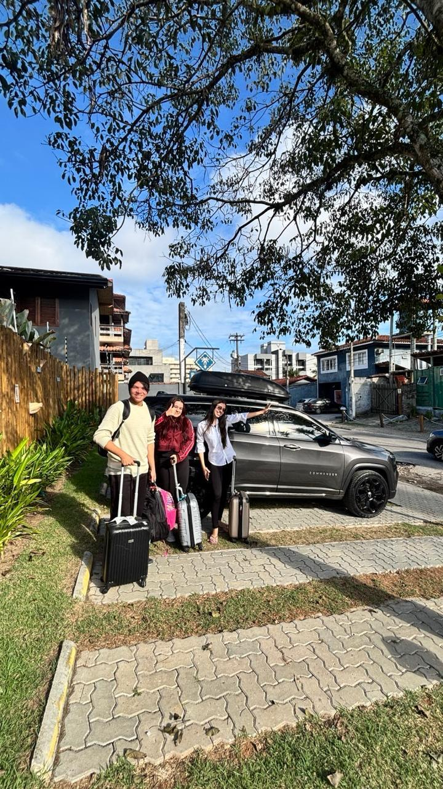
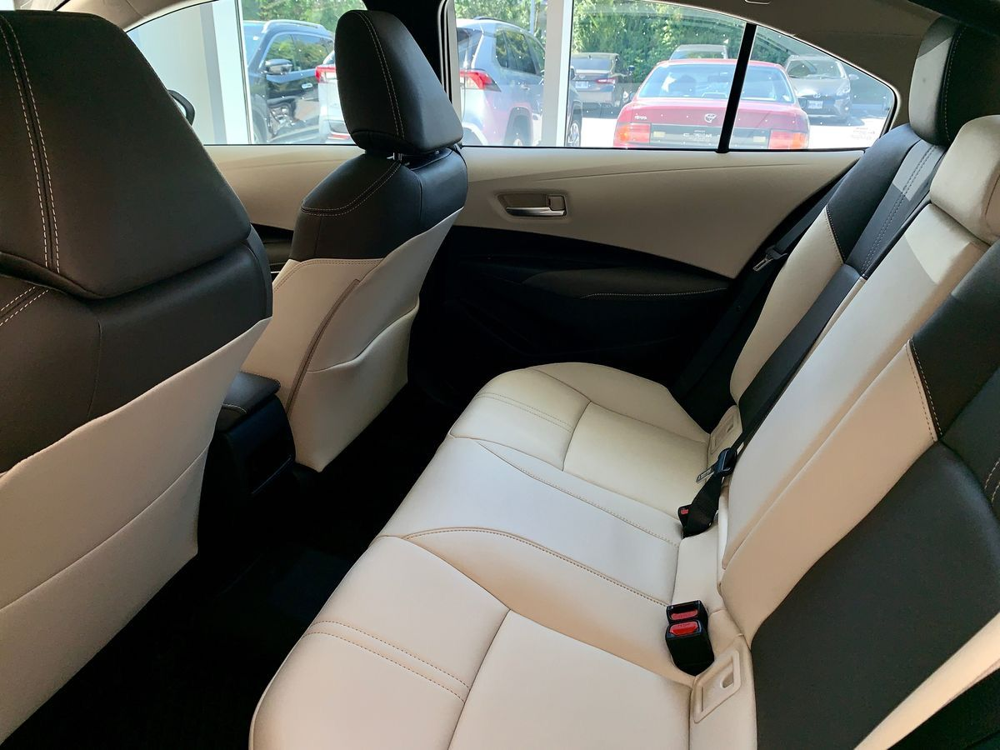

Rio Galeão International Airport (GIG)
Arriving on an international or domestic flight? Request a transfer from Galeão International Airport to your hotel or another destination.
Request a GIG transfer →
PRIVATE TRANSPORTATION IN BRAZIL
Arrive in Rio de Janeiro with a transportation service tailored to your trip. Contact KF Transportes to request a private transfer from the airport to your hotel or destination.
Request a Quote on WhatsAppAvailability, vehicle options and prices are confirmed upon request.
YOUR JOURNEY STARTS HERE
Whether you are visiting Brazil for a holiday, a business trip, a major event or a cruise, arranging your transportation in advance can make your arrival easier.
Tell us your arrival details, number of passengers, luggage requirements and destination. Our team will help you check the available transportation options for your trip.
AIRPORT PICKUP

Arriving on an international or domestic flight? Request a transfer from Galeão International Airport to your hotel or another destination.
Request a GIG transfer →Need transportation after landing at Santos Dumont? Contact us to check transfer options from the airport to your accommodation or destination.
Request an SDU transfer →BEYOND THE AIRPORT
Rio de Janeiro can be the starting point for a wider trip through Brazil. Depending on your itinerary and availability, you can contact us to request transportation to other destinations.
Have a specific destination in mind? Send us your itinerary and we will check the available options.
Ask About Your DestinationSIMPLE BOOKING PROCESS
To help us prepare your quote, please send the following information through WhatsApp:
FREQUENTLY ASKED QUESTIONS
Yes. Contact KF Transportes with your flight and destination details to check availability and receive a quote.
Prices depend on the route, vehicle, passenger count and travel date. Contact us for a quote based on your itinerary.
You can tell us your group size and luggage requirements so we can check suitable vehicle options.
We recommend contacting us as early as possible, especially for holidays, festivals and major events. All requests are subject to availability and confirmation.
Use one of the WhatsApp buttons on this page and send your arrival details, passenger count and destination.
LET'S PLAN YOUR JOURNEY
Contact KF Transportes to discuss your itinerary and request a quote for your trip in Brazil.
Contact KF Transportes